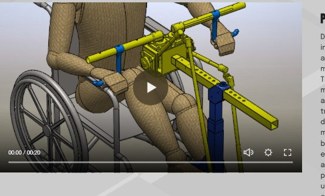
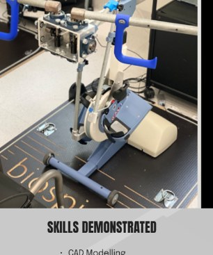
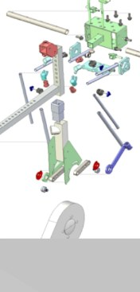
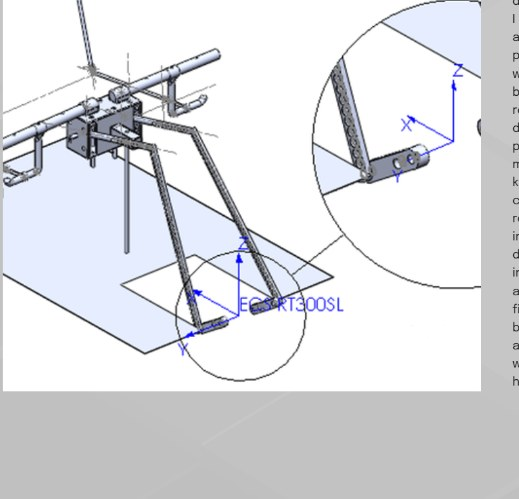

RT300 Upper-Limb Retrofit Kinematic Analysis.
A kinematic analysis project investigating an upper-limb retrofit mechanism for a rehabilitation ergometer.

Project Overview
During my mechanical engineering internship, I worked on the kinematic analysis of an upper-limb retrofit mechanism for a rehabilitation ergometer. The project involved developing CAD models, evaluating motion behaviour such as handle path, stroke length, and transmission angles, and comparing design configurations to improve mechanical performance and biomechanical compatibility.
This experience gave me the opportunity to apply engineering analysis in a more professional setting and helped me better understand how modelling and evaluation can support design improvement.



Skills Demonstrated
- CAD Modelling
- Kinematic Analysis
- Technical Problem-Solving
- Design Evaluation
- Engineering Communication

Reflection
I chose this project because it is the strongest example of my technical development so far. During this internship, I moved beyond classroom-only learning and applied engineering analysis in a practical and professional environment. I worked on evaluating the motion behaviour of a retrofit mechanism, which required careful thinking, attention to detail, and a structured approach to problem-solving.
This project is meaningful to me because it reflects the kind of engineering work I want to continue doing in the future, especially in roles involving design, analysis, and improving system performance.